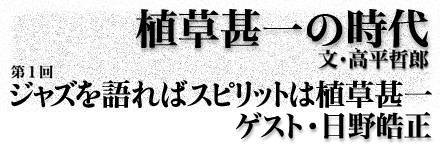

|
|
|  |
| 同胞の香りをかぎわけるとき、なぜか植草甚一がキーワードになった。七〇年代のサブカルチャーのルーツをたどると、そこにはいつも植草甚一がいた。片岡義男、山下洋輔、平野甲賀、和田誠など、多彩なゲストを相手に高平哲郎が浮かび上がらせる、彼らにとっての「植草甚一の時代」。それは、八〇〜九〇年代にメインカルチャーとして花開くことになるサブカルチャーの黎明期を伝える貴重なドキュメントだ。いまだからこそ振り返りたい、あの時代のリアル。第１回目のゲストは、ジャズミュージシャンの日野皓正氏。 |
|
久し振りに逢った日野さんは、ニッコリ笑って「元気？」と言っていつものように強めに握手をした。 日野さんとぼくはもう三十年の付き合いになる。ぼくが日野さんを紹介された同じ日に、日野さんは植草さんを紹介されている。草月会館で石川晶さんの『ジャズ・ロック・リラックス』というコンサートに植草さんと一緒に行ったときだ。ぼくは大学三年生だった。そこで植草さんに村上ガンさんを紹介される。終演後、二人はガンさんに誘われた。いまのANAホテルあたりでガンさんの経営するステーキ・ハウス『侍』に行った。ここに日野さんが来たのだ。それが縁で大学在学中に日野さんの自伝を出す話が知り合いの編集者から来て、何度か取材させてもらった。そのときは単行本は実現しなかったが、それ以来、ぼくにとっては初めての有名人の友人となった。 「植草さんと最初はどういう出会いだったんですか？」 覚えてないんだけど、たぶん植草さんが、いろんな人が出る大きなコンサートとか、ジャズ喫茶やジャズクラブにぼくが出るときに来てたんだと思うんだよね。まぁ、その辺から聴いてくれてたんだと思うんだけど。だからなんとなく、もうずっと知ってるという関係かな。
■アート・ブレイキーはぼくの父親 最初に植草さんがジャズを聴きだしたのは、MJQの『大運河』、ジャズ・メッセンジャーズの『危険な関係』『殺られる』、マイルス・デイヴィスの『死刑台のエレベーター』などのジャズが映画に使われ始めたころだ。日野皓正はそういうジャズをどんな風に聴いていたのだろうか？ いやーかっこいいなと思ってさ。まだ若かったしさ、十代だし。やっぱり『死刑台のエレベーター』、『墓に唾をかけろ』のテーマ曲の『褐色のブルース』、『大運河』……あのころいっぱいあったけど、やっぱり『スイング・ジャーナル』でさ、映画の記事が出ると、えーって思って観てさ。わぁ、かっこいいなぁって……そういうのがすごい強かった。それと『サンジェルマン・デュプレのアート・ブレイキーとジャズメッセンジャーズ』って二枚組のLP、あれもそうだし。『モーニン』もそうだし……。 ■すごい真心のある人だった やっぱりいちばん思い出すのは、草月会館のぼくの『ハイノロジー』のコンサートだよね。あのとき先生に「ゲストで出て下さい」ってお願いして。演奏して、途中で植草甚一先生ですって紹介したら出てきて「なに喋っていいかわかんないし、どうしよう……」とか言いながら、音楽に関係あったんだかないんだか、難しい話をしてねぇ（笑）。それでぼくも、相槌打とうにも打てないわけ。なんの話なんだかよくわかんないなぁみたいな（笑）。難しくて、ただはいはい言って聞いてたっていう……。アレン・ギンズバーグの話だったのかな、あの辺ヒッピーの時代だったけどね。それで、とんちんかんな会話なんだけど、結構評判よかったんだよね。あの時代、ゲストってのがだいたい受けたし。 あるとき、植草さんが気に入らない日野さんのコンサートがあった。七三年の郵便貯金ホールの『ビー・アンド・ノウ』だった。いちばん前の席で緞帳が降りて、ぼくは「楽屋に行きますか？」と聞いた。なんだか植草さんは怒っていて「なんで楽屋に行くんですか。楽屋行ってぼくは、日野くんにどうでしたって聞かれたら、なんて答えたらいいんです」と言って他の客をかき分けるようにして出口に向かった。 そういう気持ちってわかるよね。すごいわかる。誰に、なにに怒ってたんだろう。ちょっとさぁ、ファロア・サンダースみたいなさ、変なフリーとも何ともつかないことをやってたんだよね、俺。そういう意味で、なんだ日野はって、ほんとは思ったんだと思うのね。だから、うれしいよね。 「反対にさ、ぼくから高平さんに聞いた方が植草さんのことわかると思うんだけど……。どういう感性だったんだろう？ たとえば政治みたいなものはさ、嫌がってたのかとかさ……」 なるほどね、それはよくわかるよね。やっぱりさ、ぼくたちも思うけど、自分たちが批評される立場だと思うと、最低条件、人間的で人を包むだけの暖かさがある人に批評されたいと思うよね。「ここの部分よかったけども、でもね、ここにもう一つなんか入ればいいんじゃないの」とかさ。「ここはすごく嫌いだったな」とか、そういう風に言ってくれれば、ほんとにいいなってね。そんなふうに言われれば、俺もそう思ってたんだとか思うじゃない。だから昔「日野は会ったらぶっ飛ばしてやる」みたいな批評、書いてあるの見たら、こいつはなにを根拠に言ってるんだって思ったよね。 ■ジャズを語ればスピリットは植草甚一 マイルスが電気楽器で登場した『ビッチェズ・ブルー』は植草さんにとってはショックだった。各誌で植草さんは高い評価をしたが、日野さんはどう思ったのだろう？ 『ビッチェズ・ブルー』？ そんなに覚えてないんだけどさ。……ぼくねぇ、あのころだと思うんだけど、チック・コリアとアイアート・モレイラとデーブ・ホランドとジャック・ディジョネットとウエイン・ショーター、そのシックステットを六九年か七〇年にニューヨークに行ったときに見て聴いてるわけ。そのちょっと後だよね、『ビッチェズ・ブルー』が出てきたのは。だからああいうふうに、ディジョネットが叩いてるときにリアルタイムで見てるから、ショックなんてもんじゃなくて……。七〇年の大阪のエキスポの時に、国際ジャズフェスティバルっていうのをやったんだけど、ぼく自身はアメリカから帰ってきたばかりだからマイルスのまったくの真似。弟も、ジャック・ディジョネットを聴いてきて、びっくりして口、ぽかんと開けてたくらいだから、その通りやって。それでダニエル・イメールに「日野はなんでマイルスの真似しなくちゃいけないんだ」って、すごい批評やられたわけ。そんで、みんなもう口もきいてくんないの（笑）。 「植草さんが奥さんのことを、梅子さんをね。梅公って呼んでたの（笑）。俺はこいつを梅公って呼ぶんだって（笑）」 ■エンターテイナーは教祖でもある たまにね。なんかさ、何十年も俺を見てないような、おばさんやおじさんが来てさ「日野さんって言ったらトンボグラスだと思ってたのに」。何十年経ってんだよ、みたいなことあるんだけど（笑）。人に言われれば言われるほどさ、嫌になる性格だからね。絶対普通の人でいたいと思うじゃない。普通の人も、やっぱ、ラッパ持ったときだけはすごいなって、やっぱり思われたいじゃない。
二十年以上前、ぼくは日野さんに生意気な意見を言った。マイルスがアーティストならサッチモはエンターテイナー。日野皓正はサッチモだ──つまり芸人だと。 うん。芸人というかね。親父が連れてってくれる映画は、『姉妹と水兵』とか『ヒット・パレード』『イースターパレード』『情熱の協奏曲』──ハリー・ジェイムスが出てるやつね、ああいうのしか連れてってくれなかったわけじゃない。そうするとさ、エンターテイナーってのが、サッチモとかになっちゃってる。だから、アートも掘り下げて行くんだけど、自然にどっかでエンターテイナーが出てきちゃう。 「でも、あれだよねぇ、昔はたとえば、エンターテイナーがサッチモで、アーチストがマイルスみたいに思ってたけどさぁ、マイルスなんか……」
音楽でも映画でもそうだけど、自分がいつも第三者として客席にいなくちゃいけないってのは、エンターテイナーからきてるよね。第三者のところに必ず自分が座ってるわけ。それでいまかっこいいかな、音楽のあれはともかく、見ててお客さんがつまんないって思ってないかな、じゃあこの辺で刺激が必要かな……とかね（笑）。そういうことをいつも客席から見てるわけ。そうすると、自分たちのやりたいことが自然に出来てる。お客さんによかったって言われるっていうのは、そこだと思うの。その意識があれば、その人はスター性ってものがあるか、あるいは逆に、人を人、お客をお客とも思わない、横暴な自我がすっごい強い人、そのどちらかだと思うのね。 「教祖だね」 なんだかきょうも日野さんに新しいことを教わったような気がした。数カ月後、ストレートに伸ばしていた髪を三年ぶりに行った自宅付近の美容室で元に戻してもらった。
|
| 高平哲郎（たかひら・てつお） 1947年東京生まれ。一橋大学社会学部卒業。広告代理店、雑誌『宝島』編集部をへてフリーランスとなる。74年より、アイランズ主宰。テレビ番組の構成、ステージ・ショー、芝居等の演出、および編集者として活躍。著書に、『星にスイングすれば』『話は映画ではじまった PART1男編』『同 PART2女編』『スタンダップ・コメディの勉強』（以上晶文社）、『みんな不良少年だった』（河出文庫）、『由利徹が行く』（白水社）などがある。 |
|
| 日野皓正（ひの・てるまさ） 1942年10月25日東京・高円寺に生まれる。9歳からトランペットを学び、中学の頃から米軍キャンプでダンス・バンドのサード・トランペットとして活動を始める。62年、白木秀男クインテットに加入し、65年、ベルリン・ジャズ祭に出演。67年、初リーダー・アルバム『アローン・アローン・アンド・アローン』を発表。68年、菊地雅章との双頭バンドを経て日野クインテットは絶大な人気を博し、「ヒノテル・ブーム」を起こす。70年、ニューヨークから帰国すると、アイビー・スタイルからヒッピー風に変貌。75年、ニューヨーク在住を決意。ギル・エヴァンス、ジャッキー・マクリーン、ラリー・コリエルなどと活動を重ねる。アルバム、受賞多数。 |